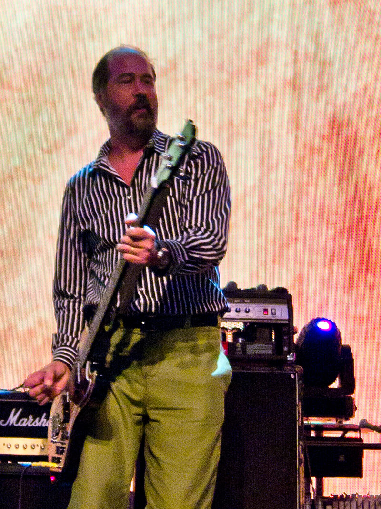

Kurt Donald Cobain (February 20, 1967 – April 5, 1994) was an American singer, songwriter, and musician, best known as the guitarist and frontman of the rock band Nirvana. Cobain is remembered as one of the most iconic and influential rock musicians in the history of alternative music. Born in Aberdeen, Washington, Cobain formed the band Nirvana with Krist Novoselic and Aaron Burckhard in 1987 and established it as part of the Seattle music scene which later became known as grunge. After signing with major label DGC Records, Nirvana found success with "Smells Like Teen Spirit" from their second album Nevermind (1991). Following the success of Nevermind, Nirvana was labelled "the flagship band" of Generation X, and Cobain was hailed as "the spokesman of a generation";[1] however, Cobain resented this, believing his message and artistic vision had been misinterpreted by the public, with his personal problems often subject to media attention.[2]

Krist Anthony Novoselic (/ˌnoʊvəˈsɛlɪk/; Croatian: Krist Novoselić; born May 16, 1965) is an American musician and political activist, and was the bassist and founding member of the grunge band Nirvana alongside guitarist and lead singer Kurt Cobain.[1][2] Nirvana achieved massive success, earning multiple gold and platinum awards and touring around the world at sold-out shows.[3 After Nirvana disbanded following the death of Kurt Cobain in 1994, Novoselic formed Sweet 75[4] in the following year and Eyes Adrift in 2002, releasing one album with each band.[5] From 2006 to 2009, he played in the punk rock band Flipper, and in 2011, he contributed bass and accordion to the song "I Should Have Known" on the Foo Fighters' studio album Wasting Light, along with playing bass guitar and accordion in his current band, Giants in the Trees since June 2017.[6][7]
